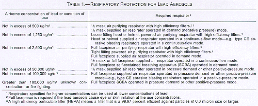

Regulations (Standards - 29 CFR)
Lead - 1926.62
- Standard Number: 1926.62
- Standard Title: Lead
- SubPart Number: D
- SubPart Title: Occupational Health and Environmental Controls
(a)
"Scope". This section applies to all construction work where an employee may be occupationally exposed to lead. All construction work excluded from coverage in the general industry standard for lead by 29 CFR 1910.1025(a)(2) is covered by this standard. Construction work is defined as work for construction, alteration and/or repair, including painting and decorating. It includes but is not limited to the following:
(a)(1)Demolition or salvage of structures where lead or materials containing lead are present;
(a)(2)Removal or encapsulation of materials containing lead;
(a)(3)New construction, alteration, repair, or renovation of structures, substrates, or portions thereof, that contain lead, or materials containing lead;
(a)(4)Installation of products containing lead;
(a)(5)Lead contamination/emergency cleanup;
..1926.62(a)(6)
(a)(6)Transportation, disposal, storage, or containment of lead or materials containing lead on the site or location at which construction activities are performed, and
(a)(7)Maintenance operations associated with the construction activities described in this paragraph.
(b)"Definitions".
"Action level" means employee exposure, without regard to the use of respirators, to an airborne concentration of lead of 30 micrograms per cubic meter of air (30 ug/m(3)) calculated as an 8-hour time-weighted average (TWA).
"Assistant Secretary" means the Assistant Secretary of Labor for Occupational Safety and Health, U.S. Department of Labor, or designee.
"Competent person" means one who is capable of identifying existing and predictable lead hazards in the surroundings or working conditions and who has authorization to take prompt corrective measures to eliminate them.
"Director" means the Director, National Institute for Occupational Safety and Health (NIOSH), U.S. Department of Health and Human Services, or designee.
"Lead" means metallic lead, all inorganic lead compounds, and organic lead soaps. Excluded from this definition are all other organic lead compounds.
"This section" means this standard.
(c)"Permissible exposure limit".
(c)(1)The employer shall assure that no employee is exposed to lead at concentrations greater than fifty micrograms per cubic meter of air (50 ug/m(3)) averaged over an 8-hour period.
(c)(2)If an employee is exposed to lead for more than 8 hours in any work day the employees' allowable exposure, as a time weighted average (TWA) for that day, shall be reduced according to the following formula:
Allowable employee exposure (in ug/m(3)) = 400 divided by hours worked in the day.
..1926.62(c)(3)
(c)(3)When respirators are used to limit employee exposure as required under paragraph (c) of this section and all the requirements of paragraphs (e)(1) and (f) of this section have been met, employee exposure may be considered to be at the level provided by the protection factor of the respirator for those periods the respirator is worn. Those periods may be averaged with exposure levels during periods when respirators are not worn to determine the employee's daily TWA exposure.
(d)"Exposure assessment".
(d)(1)"General".
(d)(1)(i)Each employer who has a workplace or operation covered by this standard shall initially determine if any employee may be exposed to lead at or above the action level.
(d)(1)(ii)For the purposes of paragraph (d) of this section, employee exposure is that exposure which would occur if the employee were not using a respirator.
(d)(1)(iii)With the exception of monitoring under paragraph (d)(3), where monitoring is required under this section, the employer shall collect personal samples representative of a full shift including at least one sample for each job classification in each work area either for each shift or for the shift with the highest exposure level.
(d)(1)(iv)Full shift personal samples shall be representative of the monitored employee's regular, daily exposure to lead.
(d)(2)"Protection of employees during assessment of exposure".
..1926.62(d)(2)(i)
(d)(2)(i)With respect to the lead related tasks listed in this paragraph (d)(2)(i) of this section, where lead is present, until the employer performs an employee exposure assessment as required in paragraph (d) of this section and documents that the employee performing any of the listed tasks is not exposed above the PEL, the employer shall treat the employee as if the employee were exposed above the PEL, and not in excess of ten (10) times the PEL, and shall implement employee protective measures prescribed in paragraph (d)(2)(v) of this section. The tasks covered by this requirement are:
(d)(2)(i)(A)Where lead containing coatings or paint are present: Manual demolition of structures (e.g, dry wall), manual scraping, manual sanding, heat gun applications, and power tool cleaning with dust collection systems;
(d)(2)(i)(B)Spray painting with lead paint
(d)(2)(ii)In addition, with regard to tasks not listed in paragraph (d)(2)(i), where the employer has any reason to believe that an employee performing the task may be exposed to lead in excess of the PEL, until the employer performs an employee exposure assessment as required by paragraph (d) of this section and documents that the employee's lead exposure is not above the PEL the employer shall treat the employee as if the employee were exposed above the PEL and shall implement employee protective measures as prescribed in paragraph (d)(2)(v) of this section.
..1926.62(d)(2)(iii)
(d)(2)(iii)With respect to the tasks listed in this paragraph (d)(2)(iii) of this section, where lead is present, until the employer performs an employee exposure assessment as required in paragraph (d) of this section, and documents that the employee performing any of the listed tasks is not exposed in excess of 500 ug/m(3), the employer shall treat the employee as if the employee were exposed to lead in excess of 500 ug/m(3) and shall implement employee protective measures as prescribed in paragraph (d)(2)(v) of this section. Where the employer does establish that the employee is exposed to levels of lead below 500 ug/m(3), the employer may provide the exposed employee with the appropriate respirator prescribed for such use at such lower exposures, in accordance with Table 1 of this section. The tasks covered by this requirement are:
(d)(2)(iii)(A)Using lead containing mortar; lead burning
(d)(2)(iii)(B)Where lead containing coatings or paint are present: rivet busting; power tool cleaning without dust collection systems; cleanup activities where dry expendable abrasives are used; and abrasive blasting enclosure movement and removal.
(d)(2)(iv)With respect to the tasks listed in this paragraph (d)(2)(iv) of this section, where lead is present, until the employer performs an employee exposure assessment as required in paragraph (d) of this section and documents that the employee performing any of the listed tasks is not exposed to lead in excess of 2,500 ug/m(3) (50 x PEL), the employer shall treat the employee as if the employee were exposed to lead in excess of 2,500 ug/m(3) and shall implement employee protective measures as prescribed in paragraph (d)(2)(v) of this section. Where the employer does establish that the employee is exposed to levels of lead below 2,500 ug/m(3), the employer may provide the exposed employee with the appropriate respirator prescribed for use at such lower exposures, in accordance with Table I of this section. Interim protection as described in this paragraph is required where lead containing coatings or paint are present on structures when performing:
..1926.62(d)(2)(iv)(A)
(d)(2)(iv)(A)Abrasive blasting,
(d)(2)(iv)(B)Welding,
(d)(2)(iv)(C)Cutting, and
(d)(2)(iv)(D)Torch burning.
(d)(2)(v)Until the employer performs an employee exposure assessment as required under paragraph (d) of this section and determines actual employee exposure, the employer shall provide to employees performing the tasks described in paragraphs (d)(2)(i), (d)(2)(ii), (d)(2)(iii) and (d)(2)(iv) of this section with interim protection as follows:
(d)(2)(v)(A)Appropriate respiratory protection in accordance with paragraph (f) of this section.
(d)(2)(v)(B)Appropriate personal protective clothing and equipment in accordance with paragraph (g) of this section.
(d)(2)(v)(C)Change areas in accordance with paragraph (i)(2) of this section.
(d)(2)(v)(D)Hand washing facilities in accordance with paragraph (i)(5) of this section.
..1926.62(d)(2)(v)(E)
(d)(2)(v)(E)Biological monitoring in accordance with paragraph (j)(1)(i) of this section, to consist of blood sampling and analysis for lead and zinc protoporphyrin levels, and
(d)(2)(v)(F)Training as required under paragraph (l)(1)(i) of this section regarding 29 CFR 1926.59, Hazard Communication; training as required under paragraph (l)(2)(ii)(C) of this section, regarding use of respirators; and training in accordance with 29 CFR 1926.21, Safety training and education.
(d)(3)"Basis of initial determination".
(d)(3)(i)Except as provided under paragraphs (d)(3)(iii) and (d)(3)(iv) of this section the employer shall monitor employee exposures and shall base initial determinations on the employee exposure monitoring results and any of the following, relevant considerations:
(d)(3)(i)(A)Any information, observations, or calculations which would indicate employee exposure to lead;
(d)(3)(i)(B)Any previous measurements of airborne lead; and
(d)(3)(i)(C)Any employee complaints of symptoms which may be attributable to exposure to lead.
..1926.62(d)(3)(ii)
(d)(3)(ii)Monitoring for the initial determination where performed may be limited to a representative sample of the exposed employees who the employer reasonably believes are exposed to the greatest airborne concentrations of lead in the workplace.
(d)(3)(iii)Where the employer has previously monitored for lead exposures, and the data were obtained within the past 12 months during work operations conducted under workplace conditions closely resembling the processes, type of material, control methods, work practices, and environmental conditions used and prevailing in the employer's current operations, the employer may rely on such earlier monitoring results to satisfy the requirements of paragraphs (d)(3)(i) and (d)(6) of this section if the sampling and analytical methods meet the accuracy and confidence levels of paragraph (d)(10) of this section.
(d)(3)(iv)Where the employer has objective data, demonstrating that a particular product or material containing lead or a specific process, operation or activity involving lead cannot result in employee exposure to lead at or above the action level during processing, use, or handling, the employer may rely upon such data instead of implementing initial monitoring.
(d)(3)(iv)(A)The employer shall establish and maintain an accurate record documenting the nature and relevancy of objective data as specified in paragraph (n)(4) of this section, where used in assessing employee exposure in lieu of exposure monitoring.
..1926.62(d)(3)(iv)(B)
(d)(3)(iv)(B)Objective data, as described in this paragraph (d)(3)(iv) of this section, is not permitted to be used for exposure assessment in connection with paragraph (d)(2) of this section.
(d)(4)"Positive initial determination and initial monitoring".
(d)(4)(i)Where a determination conducted under paragraphs (d)(1), (2) and (3) of this section shows the possibility of any employee exposure at or above the action level the employer shall conduct monitoring which is representative of the exposure for each employee in the workplace who is exposed to lead.
(d)(4)(ii)Where the employer has previously monitored for lead exposure, and the data were obtained within the past 12 months during work operations conducted under workplace conditions closely resembling the processes, type of material, control methods, work practices, and environmental conditions used and prevailing in the employer's current operations, the employer may rely on such earlier monitoring results to satisfy the requirements of paragraph (d)(4)(i) of this section if the sampling and analytical methods meet the accuracy and confidence levels of paragraph (d)(10) of this section.
(d)(5)"Negative initial determination". Where a determination, conducted under paragraphs (d)(1), (2), and (3) of this section is made that no employee is exposed to airborne concentrations of lead at or above the action level the employer shall make a written record of such determination. The record shall include at least the information specified in paragraph (d)(3)(i) of this section and shall also include the date of determination, location within the worksite, and the name and social security number of each employee monitored.
(d)(6)"Frequency".
(d)(6)(i)If the initial determination reveals employee exposure to be below the action level further exposure determination need not be repeated except as otherwise provided in paragraph (d)(7) of this section.
(d)(6)(ii)If the initial determination or subsequent determination reveals employee exposure to be at or above the action level but at or below the PEL the employer shall perform monitoring in accordance with this paragraph at least every 6 months. The employer shall continue monitoring at the required frequency until at least two consecutive measurements, taken at least 7 days apart, are below the action level at which time the employer may discontinue monitoring for that employee except as otherwise provided in paragraph (d)(7) of this section.
..1926.62(d)(6)(iii)
(d)(6)(iii)If the initial determination reveals that employee exposure is above the PEL the employer shall perform monitoring quarterly. The employer shall continue monitoring at the required frequency until at least two consecutive measurements, taken at least 7 days apart, are at or below the PEL but at or above the action level at which time the employer shall repeat monitoring for that employee at the frequency specified in paragraph (d)(6)(ii) of this section, except as otherwise provided in paragraph (d)(7) of this section. The employer shall continue monitoring at the required frequency until at least two consecutive measurements, taken at least 7 days apart, are below the action level at which time the employer may discontinue monitoring for that employee except as otherwise provided in paragraph (d)(7) of this section.
(d)(7)"Additional exposure assessments". Whenever there has been a change of equipment, process, control, personnel or a new task has been initiated that may result in additional employees being exposed to lead at or above the action level or may result in employees already exposed at or above the action level being exposed above the PEL, the employer shall conduct additional monitoring in accordance with this paragraph.
(d)(8)"Employee notification".
(d)(8)(i)Within 5 working days after completion of the exposure assessment the employer shall notify each employee in writing of the results which represent that employee's exposure.
(d)(8)(ii)Whenever the results indicate that the representative employee exposure, without regard to respirators, is at or above the PEL the employer shall include in the written notice a statement that the employees exposure was at or above that level and a description of the corrective action taken or to be taken to reduce exposure to below that level.
..1926.62(d)(9)
(d)(9)"Accuracy of measurement". The employer shall use a method of monitoring and analysis which has an accuracy (to a confidence level of 95 percent) of not less than plus or minus 25 percent for airborne concentrations of lead equal to or greater than 30 ug/m(3).
(e)"Methods of compliance"
(e)(1)"Engineering and work practice controls." The employer shall implement engineering and work practice controls, including administrative controls, to reduce and maintain employee exposure to lead to or below the permissible exposure limit to the extent that such controls are feasible. Wherever all feasible engineering and work practices controls that can be instituted are not sufficient to reduce employee exposure to or below the permissible exposure limit prescribed in paragraph (c) of this section, the employer shall nonetheless use them to reduce employee exposure to the lowest feasible level and shall supplement them by the use of respiratory protection that complies with the requirements of paragraph (f) of this section.
(e)(2)"Compliance program".
(e)(2)(i)Prior to commencement of the job each employer shall establish and implement a written compliance program to achieve compliance with paragraph (c) of this section.
(e)(2)(ii)Written plans for these compliance programs shall include at least the following:
..1926.62(e)(2)(ii)(A)
(e)(2)(ii)(A)A description of each activity in which lead is emitted; e.g. equipment used, material involved, controls in place, crew size, employee job responsibilities, operating procedures and maintenance practices;
(e)(2)(ii)(B)A description of the specific means that will be employed to achieve compliance and, where engineering controls are required engineering plans and studies used to determine methods selected for controlling exposure to lead;
(e)(2)(ii)(C)A report of the technology considered in meeting the PEL;
(e)(2)(ii)(D)Air monitoring data which documents the source of lead emissions;
(e)(2)(ii)(E)A detailed schedule for implementation of the program, including documentation such as copies of purchase orders for equipment, construction contracts, etc.;
(e)(2)(ii)(F)A work practice program which includes items required under paragraphs (g), (h) and (i) of this section and incorporates other relevant work practices such as those specified in paragraph (e)(5) of this section;
(e)(2)(ii)(G)An administrative control schedule required by paragraph (e)(4) of this section, if applicable;
..1926.62(e)(2)(ii)(H)
(e)(2)(ii)(H)A description of arrangements made among contractors on multi-contractor sites with respect to informing affected employees of potential exposure to lead and with respect to responsibility for compliance with this section as set-forth in 1926.16.
(e)(2)(ii)(I)Other relevant information.
(e)(2)(iii)The compliance program shall provide for frequent and regular inspections of job sites, materials, and equipment to be made by a competent person.
(e)(2)(iv)Written programs shall be submitted upon request to any affected employee or authorized employee representatives, to the Assistant Secretary and the Director, and shall be available at the worksite for examination and copying by the Assistant Secretary and the Director.
(e)(2)(v)Written programs shall be revised and updated at least every 6 months to reflect the current status of the program.
(e)(3)"Mechanical ventilation". When ventilation is used to control lead exposure, the employer shall evaluate the mechanical performance of the system in controlling exposure as necessary to maintain its effectiveness.
(e)(4)"Administrative controls". If administrative controls are used as a means of reducing employees TWA exposure to lead, the employer shall establish and implement a job rotation schedule which includes:
..1926.62(e)(4)(i)
(e)(4)(i)Name or identification number of each affected employee;
(e)(4)(ii)Duration and exposure levels at each job or work station where each affected employee is located; and
(e)(4)(iii)Any other information which may be useful in assessing the reliability of administrative controls to reduce exposure to lead.
(e)(5)The employer shall ensure that, to the extent relevant, employees follow good work practices such as described in Appendix B of this section.
(f)Respiratory protection.
(f)(1)General. For employees who use respirators required by this section, the employer must provide respirators that comply with the requirements of this paragraph. Respirators must be used during:
(f)(1)(i)Periods when an employee's exposure to lead exceeds the PEL.
(f)(1)(ii)Work operations for which engineering and work-practice controls are not sufficient to reduce employee exposures to or below the PEL.
(f)(1)(iii)Periods when an employee requests a respirator.
(f)(1)(iv)Periods when respirators are required to provide interim protection of employees while they perform the operations specified in paragraph (d)(2) of this section.
(f)(2)Respirator program.
(f)(2)(i)The employer must implement a respiratory protection program in accordance with 29 CFR 1910.134 (b) through (d) (except (d)(1)(iii)), and (f) through (m).
(f)(2)(ii)If an employee has breathing difficulty during fit testing or respirator use, the employer must provide the employee with a medical examination in accordance with paragraph (j)(3)(i)(B) of this section to determine whether or not the employee can use a respirator while performing the required duty.
(f)(3)Respirator selection.
(f)(3)(i)The employer must select the appropriate respirator or combination of respirators from Table I of this section.
(f)(3)(ii)
The employer must provide a powered air-purifying respirator
when an employee chooses to use such a respirator and it will provide
adequate protection to the employee.

..1926.62(g)
(g)"Protective work clothing and equipment".
(g)(1)"Provision and use". Where an employee is exposed to lead above the PEL without regard to the use of respirators, where employees are exposed to lead compounds which may cause skin or eye irritation (e.g. lead arsenate, lead azide), and as interim protection for employees performing tasks as specified in paragraph (d)(2) of this section, the employer shall provide at no cost to the employee and assure that the employee uses appropriate protective work clothing and equipment that prevents contamination of the employee and the employee's garments such as, but not limited to:
(g)(1)(i)Coveralls or similar full-body work clothing;
(g)(1)(ii)Gloves, hats, and shoes or disposable shoe coverlets; and
(g)(1)(iii)Face shields, vented goggles, or other appropriate protective equipment which complies with 1910.133 of this chapter.
(g)(2)"Cleaning and replacement".
(g)(2)(i)The employer shall provide the protective clothing required in paragraph (g)(1) of this section in a clean and dry condition at least weekly, and daily to employees whose exposure levels without regard to a respirator are over 200 ug/m(3) of lead as an 8-hour TWA.
(g)(2)(ii)The employer shall provide for the cleaning, laundering, and disposal of protective clothing and equipment required by paragraph (g)(1) of this section.
(g)(2)(iii)The employer shall repair or replace required protective clothing and equipment as needed to maintain their effectiveness.
..1926.62(g)(2)(iv)
(g)(2)(iv)The employer shall assure that all protective clothing is removed at the completion of a work shift only in change areas provided for that purpose as prescribed in paragraph (i)(2) of this section.
(g)(2)(v)The employer shall assure that contaminated protective clothing which is to be cleaned, laundered, or disposed of, is placed in a closed container in the change area which prevents dispersion of lead outside the container.
(g)(2)(vi)The employer shall inform in writing any person who cleans or launders protective clothing or equipment of the potentially harmful effects of exposure to lead.
(g)(2)(vii)The employer shall assure that the containers of contaminated protective clothing and equipment required by paragraph (g)(2)(v) of this section are labelled as follows:
Caution: Clothing contaminated with lead. Do not remove dust by blowing or shaking. Dispose of lead contaminated wash water in accordance with applicable local, state, or federal regulations.
(g)(2)(viii)The employer shall prohibit the removal of lead from protective clothing or equipment by blowing, shaking, or any other means which disperses lead into the air.
(h)"Housekeeping".
(h)(1)"All surfaces shall be maintained as free as practicable of accumulations of lead".
..1926.62(h)(2)
(h)(2)Clean-up of floors and other surfaces where lead accumulates shall wherever possible, be cleaned by vacuuming or other methods that minimize the likelihood of lead becoming airborne.
(h)(3)Shoveling, dry or wet sweeping, and brushing may be used only where vacuuming or other equally effective methods have been tried and found not to be effective.
(h)(4)Where vacuuming methods are selected, the vacuums shall be equipped with HEPA filters and used and emptied in a manner which minimizes the reentry of lead into the workplace.
(h)(5)Compressed air shall not be used to remove lead from any surface unless the compressed air is used in conjunction with a ventilation system designed to capture the airborne dust created by the compressed air.
(i)"Hygiene facilities and practices."
(i)(1)The employer shall assure that in areas where employees are exposed to lead above the PEL without regard to the use of respirators, food or beverage is not present or consumed, tobacco products are not present or used, and cosmetics are not applied.
..1926.62(i)(2)
(i)(2)"Change areas".
(i)(2)(i)The employer shall provide clean change areas for employees whose airborne exposure to lead is above the PEL, and as interim protection for employees performing tasks as specified in paragraph (d)(2) of this section, without regard to the use of respirators.
(i)(2)(ii)The employer shall assure that change areas are equipped with separate storage facilities for protective work clothing and equipment and for street clothes which prevent cross-contamination.
(i)(2)(iii)The employer shall assure that employees do not leave the workplace wearing any protective clothing or equipment that is required to be worn during the work shift.
(i)(3)"Showers".
(i)(3)(i)The employer shall provide shower facilities, where feasible, for use by employees whose airborne exposure to lead is above the PEL.
(i)(3)(ii)The employer shall assure, where shower facilities are available, that employees shower at the end of the work shift and shall provide an adequate supply of cleansing agents and towels for use by affected employees.
(i)(4)"Eating facilities".
(i)(4)(i)The employer shall provide lunchroom facilities or eating areas for employees whose airborne exposure to lead is above the PEL, without regard to the use of respirators.
..1926.62(i)(4)(ii)
(i)(4)(ii)The employer shall assure that lunchroom facilities or eating areas are as free as practicable from lead contamination and are readily accessible to employees.
(i)(4)(iii)The employer shall assure that employees whose airborne exposure to lead is above the PEL, without regard to the use of a respirator, wash their hands and face prior to eating, drinking, smoking or applying cosmetics.
(i)(4)(iv)The employer shall assure that employees do not enter lunchroom facilities or eating areas with protective work clothing or equipment unless surface lead dust has been removed by vacuuming, downdraft booth, or other cleaning method that limits dispersion of lead dust.
(i)(5)"Hand Washing facilities".
(i)(5)(i)The employer shall provide adequate handwashing facilities for use by employees exposed to lead in accordance with 29 CFR 1926.51(f).
(i)(5)(ii)Where showers are not provided the employer shall assure that employees wash their hands and face at the end of the work-shift.
..1926.62(j)
(j)"Medical surveillance".
(j)(1)"General".
(j)(1)(i)The employer shall make available initial medical surveillance to employees occupationally exposed on any day to lead at or above the action level. Initial medical surveillance consists of biological monitoring in the form of blood sampling and analysis for lead and zinc protoporphyrin levels.
(j)(1)(ii)The employer shall institute a medical surveillance program in accordance with paragraphs (j)(2) and (j)(3) of this section for all employees who are or may be exposed by the employer at or above the action level for more than 30 days in any consecutive 12 months;
(j)(1)(iii)The employer shall assure that all medical examinations and procedures are performed by or under the supervision of a licensed physician.
(j)(1)(iv)The employer shall make available the required medical surveillance including multiple physician review under paragraph (j)(3)(iii) without cost to employees and at a reasonable time and place.
(j)(2)"Biological monitoring".
(j)(2)(i)"Blood lead and ZPP level sampling and analysis". The employer shall make available biological monitoring in the form of blood sampling and analysis for lead and zinc protoporphyrin levels to each employee covered under paragraphs (j)(1)(i) and (ii) of this section on the following schedule:
..1926.62(j)(2)(i)(A)
(j)(2)(i)(A)For each employee covered under paragraph (j)(1)(ii) of this section, at least every 2 months for the first 6 months and every 6 months thereafter;
(j)(2)(i)(B)For each employee covered under paragraphs (j)(1)(i) or (ii) of this section whose last blood sampling and analysis indicated a blood lead level at or above 40 ug/dl, at least every two months. This frequency shall continue until two consecutive blood samples and analyses indicate a blood lead level below 40 ug/dl; and
(j)(2)(i)(C)For each employee who is removed from exposure to lead due to an elevated blood lead level at least monthly during the removal period.
(j)(2)(ii)"Follow-up blood sampling tests". Whenever the results of a blood lead level test indicate that an employee's blood lead level exceeds the numerical criterion for medical removal under paragraph (k)(1)(i) of this section, the employer shall provide a second (follow-up) blood sampling test within two weeks after the employer receives the results of the first blood sampling test.
(j)(2)(iii)"Accuracy of blood lead level sampling and analysis". Blood lead level sampling and analysis provided pursuant to this section shall have an accuracy (to a confidence level of 95 percent) within plus or minus 15 percent or 6 ug/dl, whichever is greater, and shall be conducted by a laboratory approved by OSHA.
..1926.62(j)(2)(iv)
(j)(2)(iv)"Employee notification".
(j)(2)(iv)(A)Within five working days after the receipt of biological monitoring results, the employer shall notify each employee in writing of his or her blood lead level; and
(j)(2)(iv)(B)the employer shall notify each employee whose blood lead level exceeds 40 ug/dl that the standard requires temporary medical removal with Medical Removal Protection benefits when an employee's blood lead level exceeds the numerical criterion for medical removal under paragraph (k)(1)(i) of this section.
(j)(3)"Medical examinations and consultations".
(j)(3)(i)"Frequency". The employer shall make available medical examinations and consultations to each employee covered under paragraph (j)(1)(ii) of this section on the following schedule:
(j)(3)(i)(A)At least annually for each employee for whom a blood sampling test conducted at any time during the preceding 12 months indicated a blood lead level at or above 40 ug/dl;
(j)(3)(i)(B)As soon as possible, upon notification by an employee either that the employee has developed signs or symptoms commonly associated with lead intoxication, that the employee desires medical advice concerning the effects of current or past exposure to lead on the employee's ability to procreate a healthy child, that the employee is pregnant, or that the employee has demonstrated difficulty in breathing during a respirator fitting test or during use; and
..1926.62(j)(3)(i)(C)
(j)(3)(i)(C)As medically appropriate for each employee either removed from exposure to lead due to a risk of sustaining material impairment to health, or otherwise limited pursuant to a final medical determination.
(j)(3)(ii)"Content". The content of medical examinations made available pursuant to paragraph (j)(3)(i)(B)-(C) of this section shall be determined by an examining physician and, if requested by an employee, shall include pregnancy testing or laboratory evaluation of male fertility. Medical examinations made available pursuant to paragraph (j)(3)(i)(A) of this section shall include the following elements:
(j)(3)(ii)(A)A detailed work history and a medical history, with particular attention to past lead exposure (occupational and non-occupational), personal habits (smoking, hygiene), and past gastrointestinal, hematologic, renal, cardiovascular, reproductive and neurological problems;
(j)(3)(ii)(B)A thorough physical examination, with particular attention to teeth, gums, hematologic, gastrointestinal, renal, cardiovascular, and neurological systems. Pulmonary status should be evaluated if respiratory protection will be used;
(j)(3)(ii)(C)A blood pressure measurement;
(j)(3)(ii)(D)A blood sample and analysis which determines:
..1926.62(j)(3)(ii)(D)(1)
(j)(3)(ii)(D)(1)Blood lead level;
(j)(3)(ii)(D)(2)Hemoglobin and hematocrit determinations, red cell indices, and examination of peripheral smear morphology;
(j)(3)(ii)(D)(3)Zinc protoporphyrin;
(j)(3)(ii)(D)(4)Blood urea nitrogen; and,
(j)(3)(ii)(D)(5)Serum creatinine;
(j)(3)(ii)(E)A routine urinalysis with microscopic examination; and
(j)(3)(ii)(F)Any laboratory or other test relevant to lead exposure which the examining physician deems necessary by sound medical practice.
(j)(3)(iii)"Multiple physician review mechanism."
(j)(3)(iii)(A)If the employer selects the initial physician who conducts any medical examination or consultation provided to an employee under this section, the employee may designate a second physician:
(j)(3)(iii)(A)(1)To review any findings, determinations or recommendations of the initial physician; and
..1926.62(j)(3)(iii)(A)(2)
(j)(3)(iii)(A)(2)To conduct such examinations, consultations, and laboratory tests as the second physician deems necessary to facilitate this review.
(j)(3)(iii)(B)The employer shall promptly notify an employee of the right to seek a second medical opinion after each occasion that an initial physician conducts a medical examination or consultation pursuant to this section. The employer may condition its participation in, and payment for, the multiple physician review mechanism upon the employee doing the following within fifteen (15) days after receipt of the foregoing notification, or receipt of the initial physician's written opinion, whichever is later:
(j)(3)(iii)(B)(1)The employee informing the employer that he or she intends to seek a second medical opinion, and
(j)(3)(iii)(B)(2)The employee initiating steps to make an appointment with a second physician.
(j)(3)(iii)(C)If the findings, determinations or recommendations of the second physician differ from those of the initial physician, then the employer and the employee shall assure that efforts are made for the two physicians to resolve any disagreement.
(j)(3)(iii)(D)If the two physicians have been unable to quickly resolve their disagreement, then the employer and the employee through their respective physicians shall designate a third physician:
..1926.62(j)(3)(iii)(D)(1)
(j)(3)(iii)(D)(1)To review any findings, determinations or recommendations of the prior physicians; and
(j)(3)(iii)(D)(2)To conduct such examinations, consultations, laboratory tests and discussions with the prior physicians as the third physician deems necessary to resolve the disagreement of the prior physicians.
(j)(3)(iii)(E)The employer shall act consistent with the findings, determinations and recommendations of the third physician, unless the employer and the employee reach an agreement which is otherwise consistent with the recommendations of at least one of the three physicians.
(j)(3)(iv)"Information provided to examining and consulting physicians".
(j)(3)(iv)(A)The employer shall provide an initial physician conducting a medical examination or consultation under this section with the following information:
(j)(3)(iv)(A)(1)A copy of this regulation for lead including all Appendices;
(j)(3)(iv)(A)(2)A description of the affected employee's duties as they relate to the employee's exposure;
(j)(3)(iv)(A)(3)The employee's exposure level or anticipated exposure level to lead and to any other toxic substance (if applicable);
..1926.62(j)(3)(iv)(A)(4)
(j)(3)(iv)(A)(4)A description of any personal protective equipment used or to be used;
(j)(3)(iv)(A)(5)Prior blood lead determinations; and
(j)(3)(iv)(A)(6)All prior written medical opinions concerning the employee in the employer's possession or control.
(j)(3)(iv)(B)The employer shall provide the foregoing information to a second or third physician conducting a medical examination or consultation under this section upon request either by the second or third physician, or by the employee.
(j)(3)(v)"Written medical opinions".
(j)(3)(v)(A)The employer shall obtain and furnish the employee with a copy of a written medical opinion from each examining or consulting physician which contains only the following information:
(j)(3)(v)(A)(1)The physician's opinion as to whether the employee has any detected medical condition which would place the employee at increased risk of material impairment of the employee's health from exposure to lead;
..1926.62(j)(3)(v)(A)(2)
(j)(3)(v)(A)(2)Any recommended special protective measures to be provided to the employee, or limitations to be placed upon the employee's exposure to lead;
(j)(3)(v)(A)(3)Any recommended limitation upon the employee's use of respirators, including a determination of whether the employee can wear a powered air purifying respirator if a physician determines that the employee cannot wear a negative pressure respirator; and
(j)(3)(v)(A)(4)The results of the blood lead determinations.
(j)(3)(v)(B)The employer shall instruct each examining and consulting physician to:
(j)(3)(v)(B)(1)Not reveal either in the written opinion or orally, or in any other means of communication with the employer, findings, including laboratory results, or diagnoses unrelated to an employee's occupational exposure to lead; and
(j)(3)(v)(B)(2)Advise the employee of any medical condition, occupational or nonoccupational, which dictates further medical examination or treatment.
..1926.62(j)(3)(vi)
(j)(3)(vi)"Alternate physician determination mechanisms". The employer and an employee or authorized employee representative may agree upon the use of any alternate physician determination mechanism in lieu of the multiple physician review mechanism provided by paragraph (j)(3)(iii) of this section so long as the alternate mechanism is as expeditious and protective as the requirements contained in this paragraph.
(j)(4)"Chelation".
(j)(4)(i)The employer shall assure that any person whom he retains, employs, supervises or controls does not engage in prophylactic chelation of any employee at any time.
(j)(4)(ii)If therapeutic or diagnostic chelation is to be performed by any person in paragraph (j)(4)(i) of this section, the employer shall assure that it be done under the supervision of a licensed physician in a clinical setting with thorough and appropriate medical monitoring and that the employee is notified in writing prior to its occurrence.
(k)"Medical removal protection".
(k)(1)"Temporary medical removal and return of an employee".
(k)(1)(i)"Temporary removal due to elevated blood lead level". The employer shall remove an employee from work having an exposure to lead at or above the action level on each occasion that a periodic and a follow-up blood sampling test conducted pursuant to this section indicate that the employee's blood lead level is at or above 50 ug/dl; and,
(k)(1)(ii)"Temporary removal due to a final medical determination".
..1926.62(k)(1)(ii)(A)
(k)(1)(ii)(A)The employer shall remove an employee from work having an exposure to lead at or above the action level on each occasion that a final medical determination results in a medical finding, determination, or opinion that the employee has a detected medical condition which places the employee at increased risk of material impairment to health from exposure to lead.
(k)(1)(ii)(B)For the purposes of this section, the phrase "final medical determination" means the written medical opinion on the employees' health status by the examining physician or, where relevant, the outcome of the multiple physician review mechanism or alternate medical determination mechanism used pursuant to the medical surveillance provisions of this section.
(k)(1)(ii)(C)Where a final medical determination results in any recommended special protective measures for an employee, or limitations on an employee's exposure to lead, the employer shall implement and act consistent with the recommendation.
(k)(1)(iii)"Return of the employee to former job status".
(k)(1)(iii)(A)The employer shall return an employee to his or her former job status:
(k)(1)(iii)(A)(1)For an employee removed due to a blood lead level at or above 50 ug/dl when two consecutive blood sampling tests indicate that the employee's blood lead level is at or below 40 ug/dl;
..1926.62(k)(1)(iii)(A)(2)
(k)(1)(iii)(A)(2)For an employee removed due to a final medical determination, when a subsequent final medical determination results in a medical finding, determination, or opinion that the employee no longer has a detected medical condition which places the employee at increased risk of material impairment to health from exposure to lead.
(k)(1)(iii)(B)For the purposes of this section, the requirement that an employer return an employee to his or her former job status is not intended to expand upon or restrict any rights an employee has or would have had, absent temporary medical removal, to a specific job classification or position under the terms of a collective bargaining agreement.
(k)(1)(iv)"Removal of other employee special protective measure or limitations". The employer shall remove any limitations placed on an employee or end any special protective measures provided to an employee pursuant to a final medical determination when a subsequent final medical determination indicates that the limitations or special protective measures are no longer necessary.
(k)(1)(v)"Employer options pending a final medical determination". Where the multiple physician review mechanism, or alternate medical determination mechanism used pursuant to the medical surveillance provisions of this section, has not yet resulted in a final medical determination with respect to an employee, the employer shall act as follows:
..1926.62(k)(1)(v)(A)
(k)(1)(v)(A)"Removal". The employer may remove the employee from exposure to lead, provide special protective measures to the employee, or place limitations upon the employee, consistent with the medical findings, determinations, or recommendations of any of the physicians who have reviewed the employee's health status.
(k)(1)(v)(B)"Return". The employer may return the employee to his or her former job status, end any special protective measures provided to the employee, and remove any limitations placed upon the employee, consistent with the medical findings, determinations, or recommendations of any of the physicians who have reviewed the employee's health status, with two exceptions.
(k)(1)(v)(B)(1)If the initial removal, special protection, or limitation of the employee resulted from a final medical determination which differed from the findings, determinations, or recommendations of the initial physician or;
(k)(1)(v)(B)(2)If the employee has been on removal status for the preceding eighteen months due to an elevated blood lead level, then the employer shall await a final medical determination.
(k)(2)"Medical removal protection benefits".
(k)(2)(i)"Provision of medical removal protection benefits". The employer shall provide an employee up to eighteen (18) months of medical removal protection benefits on each occasion that an employee is removed from exposure to lead or otherwise limited pursuant to this section.
..1926.62(k)(2)(ii)
(k)(2)(ii)"Definition of medical removal protection benefits". For the purposes of this section, the requirement that an employer provide medical removal protection benefits means that, as long as the job the employee was removed from continues, the employer shall maintain the total normal earnings, seniority and other employment rights and benefits of an employee, including the employee's right to his or her former job status as though the employee had not been medically removed from the employee's job or otherwise medically limited.
(k)(2)(iii)"Follow-up medical surveillance during the period of employee removal or limitation." During the period of time that an employee is medically removed from his or her job or otherwise medically limited, the employer may condition the provision of medical removal protection benefits upon the employee's participation in follow-up medical surveillance made available pursuant to this section.
(k)(2)(iv)"Workers' compensation claims". If a removed employee files a claim for workers' compensation payments for a lead-related disability, then the employer shall continue to provide medical removal protection benefits pending disposition of the claim. To the extent that an award is made to the employee for earnings lost during the period of removal, the employer's medical removal protection obligation shall be reduced by such amount. The employer shall receive no credit for workers' compensation payments received by the employee for treatment-related expenses.
(k)(2)(v)"Other credits". The employer's obligation to provide medical removal protection benefits to a removed employee shall be reduced to the extent that the employee receives compensation for earnings lost during the period of removal either from a publicly or employer-funded compensation program, or receives income from employment with another employer made possible by virtue of the employee's removal.
..1926.62(k)(2)(vi)
(k)(2)(vi)"Voluntary removal or restriction of an employee". Where an employer, although not required by this section to do so, removes an employee from exposure to lead or otherwise places limitations on an employee due to the effects of lead exposure on the employee's medical condition, the employer shall provide medical removal protection benefits to the employee equal to that required by paragraph (k)(2)(i) and (ii) of this section.
(l)"Employee information and training".
(l)(1)"General"
(l)(1)(i)The employer shall communicate information concerning lead hazards according to the requirements of OSHA's Hazard Communication Standard for the construction industry, 29 CFR 1926.59, including but not limited to the requirements concerning warning signs and labels, material safety data sheets (MSDS), and employee information and training. In addition, employers shall comply with the following requirements:
(l)(1)(ii)For all employees who are subject to exposure to lead at or above the action level on any day or who are subject to exposure to lead compounds which may cause skin or eye irritation (e.g. lead arsenate, lead azide), the employer shall provide a training program in accordance with paragraph (l)(2) of this section and assure employee participation.
(l)(1)(iii)The employer shall provide the training program as initial training prior to the time of job assignment or prior to the start up date for this requirement, whichever comes last.
(l)(1)(iv)The employer shall also provide the training program at least annually for each employee who is subject to lead exposure at or above the action level on any day.
..1926.62(l)(2)
(l)(2)"Training program". The employer shall assure that each employee is trained in the following:
(l)(2)(i)The content of this standard and its appendices;
(l)(2)(ii)The specific nature of the operations which could result in exposure to lead above the action level;
(l)(2)(iii)The purpose, proper selection, fitting, use, and limitations of respirators;
(l)(2)(iv)The purpose and a description of the medical surveillance program, and the medical removal protection program including information concerning the adverse health effects associated with excessive exposure to lead (with particular attention to the adverse reproductive effects on both males and females and hazards to the fetus and additional precautions for employees who are pregnant);
(l)(2)(v)The engineering controls and work practices associated with the employee's job assignment including training of employees to follow relevant good work practices described in Appendix B of this section;
(l)(2)(vi)The contents of any compliance plan in effect;
..1926.62(l)(2)(vii)
(l)(2)(vii)Instructions to employees that chelating agents should not routinely be used to remove lead from their bodies and should not be used at all except under the direction of a licensed physician; and
(l)(2)(viii)The employee's right of access to records under 29 CFR 1910.20.
(l)(3)"Access to information and training materials."
(l)(3)(i)The employer shall make readily available to all affected employees a copy of this standard and its appendices.
(l)(3)(ii)The employer shall provide, upon request, all materials relating to the employee information and training program to affected employees and their designated representatives, and to the Assistant Secretary and the Director.
(m)"Signs".
(m)(1)"General".
(m)(1)(i)The employer may use signs required by other statutes, regulations or ordinances in addition to, or in combination with, signs required by this paragraph.
(m)(1)(ii)The employer shall assure that no statement appears on or near any sign required by this paragraph which contradicts or detracts from the meaning of the required sign.
..1926.62(m)(2)
(m)(2)"Signs".
(m)(2)(i)The employer shall post the following warning signs in each work area where an employees exposure to lead is above the PEL.
LEAD WORK AREA
POISON
NO SMOKING OR EATING
(m)(2)(ii)
The employer shall assure that signs required by this paragraph are illuminated and cleaned as necessary so that the legend is readily visible.
(n)"Recordkeeping".
(n)(1)"Exposure assessment".
(n)(1)(i)The employer shall establish and maintain an accurate record of all monitoring and other data used in conducting employee exposure assessments as required in paragraph (d) of this section.
(n)(1)(ii)Exposure monitoring records shall include:
(n)(1)(ii)(A)The date(s), number, duration, location and results of each of the samples taken if any, including a description of the sampling procedure used to determine representative employee exposure where applicable;
(n)(1)(ii)(B)A description of the sampling and analytical methods used and evidence of their accuracy;
(n)(1)(ii)(C)The type of respiratory protective devices worn, if any;
..1926.62(n)(1)(ii)(D)
(n)(1)(ii)(D)Name, social security number, and job classification of the employee monitored and of all other employees whose exposure the measurement is intended to represent; and
(n)(1)(ii)(E)The environmental variables that could affect the measurement of employee exposure.
(n)(1)(iii)The employer shall maintain monitoring and other exposure assessment records in accordance with the provisions of 29 CFR 1910.20.
(n)(2)"Medical surveillance".
(n)(2)(i)The employer shall establish and maintain an accurate record for each employee subject to medical surveillance as required by paragraph (j) of this section.
(n)(2)(ii)This record shall include:
(n)(2)(ii)(A)The name, social security number, and description of the duties of the employee;
(n)(2)(ii)(B)A copy of the physician's written opinions;
(n)(2)(ii)(C)Results of any airborne exposure monitoring done on or for that employee and provided to the physician; and
(n)(2)(ii)(D)Any employee medical complaints related to exposure to lead.
..1926.62(n)(2)(iii)
(n)(2)(iii)The employer shall keep, or assure that the examining physician keeps, the following medical records:
(n)(2)(iii)(A)A copy of the medical examination results including medical and work history required under paragraph (j) of this section;
(n)(2)(iii)(B)A description of the laboratory procedures and a copy of any standards or guidelines used to interpret the test results or references to that information;
(n)(2)(iii)(C)A copy of the results of biological monitoring.
(n)(2)(iv)The employer shall maintain or assure that the physician maintains medical records in accordance with the provisions of 29 CFR 1910.20.
(n)(3)"Medical removals".
(n)(3)(i)The employer shall establish and maintain an accurate record for each employee removed from current exposure to lead pursuant to paragraph (k) of this section.
(n)(3)(ii)Each record shall include:
(n)(3)(ii)(A)The name and social security number of the employee;
..1926.62(n)(3)(ii)(B)
(n)(3)(ii)(B)The date of each occasion that the employee was removed from current exposure to lead as well as the corresponding date on which the employee was returned to his or her former job status;
(n)(3)(ii)(C)A brief explanation of how each removal was or is being accomplished; and
(n)(3)(ii)(D)A statement with respect to each removal indicating whether or not the reason for the removal was an elevated blood lead level.
(n)(3)(iii)The employer shall maintain each medical removal record for at least the duration of an employee's employment.
(n)(4)"Objective data for exemption from requirement for initial monitoring".
(n)(4)(i)For purposes of this section, objective data are information demonstrating that a particular product or material containing lead or a specific process, operation, or activity involving lead cannot release dust or fumes in concentrations at or above the action level under any expected conditions of use. Objective data can be obtained from an industry-wide study or from laboratory product test results from manufacturers of lead containing products or materials. The data the employer uses from an industry-wide survey must be obtained under workplace conditions closely resembling the processes, types of material, control methods, work practices and environmental conditions in the employer's current operations.
..1926.62(n)(4)(ii)
(n)(4)(ii)The employer shall maintain the record of the objective data relied upon for at least 30 years.
(n)(5)"Availability". The employer shall make available upon request all records required to be maintained by paragraph (n) of this section to affected employees, former employees, and their designated representatives, and to the Assistant Secretary and the Director for examination and copying.
(n)(6)"Transfer of records".
(n)(6)(i)Whenever the employer ceases to do business, the successor employer shall receive and retain all records required to be maintained by paragraph (n) of this section.
(n)(6)(ii)Whenever the employer ceases to do business and there is no successor employer to receive and retain the records required to be maintained by this section for the prescribed period, these records shall be transmitted to the Director.
(n)(6)(iii)At the expiration of the retention period for the records required to be maintained by this section, the employer shall notify the Director at least 3 months prior to the disposal of such records and shall transmit those records to the Director if requested within the period.
..1926.62(n)(6)(iv)
(n)(6)(iv)The employer shall also comply with any additional requirements involving transfer of records set forth in 29 CFR 1910.20(h).
(o)"Observation of monitoring".
(o)(1)Employee observation. The employer shall provide affected employees or their designated representatives an opportunity to observe any monitoring of employee exposure to lead conducted pursuant to paragraph (d) of this section.
(o)(2)"Observation procedures".
(o)(2)(i)Whenever observation of the monitoring of employee exposure to lead requires entry into an area where the use of respirators, protective clothing or equipment is required, the employer shall provide the observer with and assure the use of such respirators, clothing and equipment, and shall require the observer to comply with all other applicable safety and health procedures.
(o)(2)(ii)Without interfering with the monitoring, observers shall be entitled to:
(o)(2)(ii)(A)Receive an explanation of the measurement procedures;
(o)(2)(ii)(B)Observe all steps related to the monitoring of lead performed at the place of exposure; and
(o)(2)(ii)(C)Record the results obtained or receive copies of the results when returned by the laboratory.
..1926.62(p)
(p)"Effective date". This standard (1926.62) shall become effective June 3, 1993.
(q)"Appendices". The information contained in the appendices to this section is not intended by itself, to create any additional obligations not otherwise imposed by this standard nor detract from any existing obligation.
(r)"Startup dates".
(r)(1)The requirements of paragraphs (c) through (o) of this section, including administrative controls and feasible work practice controls, but not including engineering controls specified in paragraph (e)(1) of this section, shall be complied with as soon as possible, but no later than 60 days from the effective date of this section.
(r)(2)Feasible engineering controls specified by paragraph (e)(1) of this section shall be implemented as soon as possible, but no later than 120 days from the effective date of this section.
[57 FR 26627, May 4, 1993, as amended at 58 FR 34218, June 24, 1993; 61 FR 5507, Feb. 13, 1996; 63 FR 1152, Jan. 8, 1998]